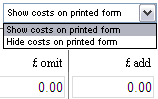

How do I hide cost information on an Architect/Contract Administrator’s Instruction? |
The Architects/Contract Administrator’s Instruction editor allows the user the choice of showing or hiding cost information on the form.

To hide costs on the Instruction Form, select Hide costs on printed form from the drop down. Please Note: this information will still appear on the form displayed in NBS Contract Administrator Editor for the users reference.
The user can later select the Show costs on printed form option to print out forms with the costing information included.
See also:
Issuing a Form
Frequently Asked Questions